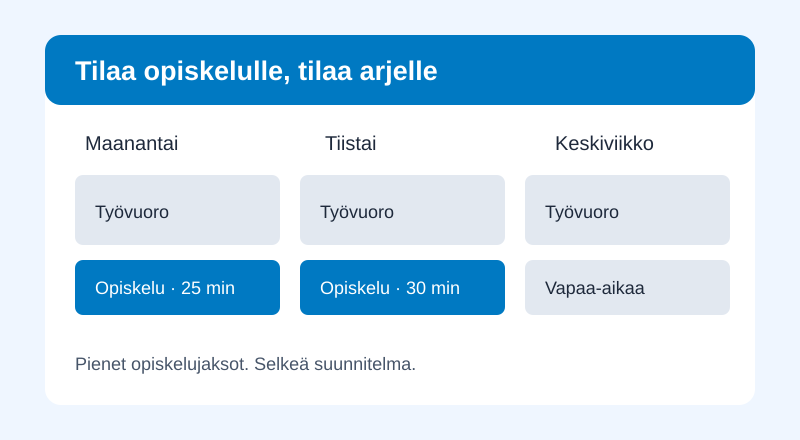

Suunnittele opiskelulle paikka viikossasi
SmartSchedule kokoaa työvuorot, vapaa-ajan menot, sopivat opiskelupäivät ja kurssitehtävät yhteen viikkoaikatauluun.
Omat menot ensin
Merkitse työvuorot ja vapaa-ajan menot. Valitse päivät, jolloin opiskelulle on aikaa.
Tutustu omiin menoihinViikko yhdellä silmäyksellä
Esimerkkiviikolla opiskelu sijoittuu kolmelle päivälle. Perjantai jää vapaaksi opiskelusta.
Katso esimerkin viikkoaikatauluNäin suunnitelma syntyy
- Kirjaa työvuorot, vapaa-ajan menot ja opiskelupäivät.
- Lisää kurssitehtävät ja palautuspäivät.
- Muodosta viikkoaikataulu ja tarkista suunnitelma.

HTML- ja CSS-prototyyppi · Tiedot ovat esimerkkejä.